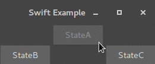

Demonstrates how to to generate Swift source code from a statechart.

The application consists of one screen that iterates between three different buttons each second. Clicking on one of the buttons results in a change of direction.
The example is based on Swift and contains a small GUI that demonstrate the state machine behaviour in model/SwiftExample.sct. This example combines generated Swift code with manual Swift implementations (the GUI). To generate the state machine code, right-click on model/SwiftExample.sgen and select 'Generate Code Artifacts'. To start the application execute 'swift build' in the Folder containing the Example Code. Afterwards the program can be started with 'swift run'.